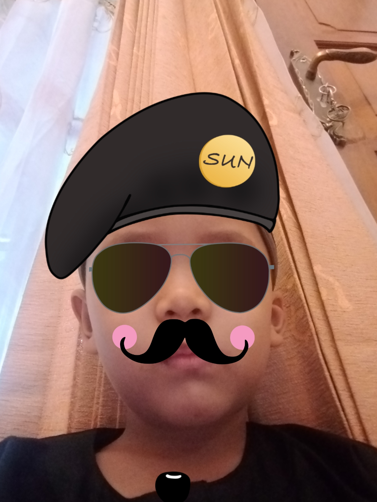

🎲 Game Mu'adz
🏃
Posisi Pemain: Kotak
1
/ 100
Salah:
0
/2
1. Jawab soal cerita terlebih dahulu!
MATEMATIKA
Jawab pertanyaan untuk memutar roda spin...
1
2
3
4
5
6
🎡 Putar Roda Spin
🔄 Ulangi dari Awal